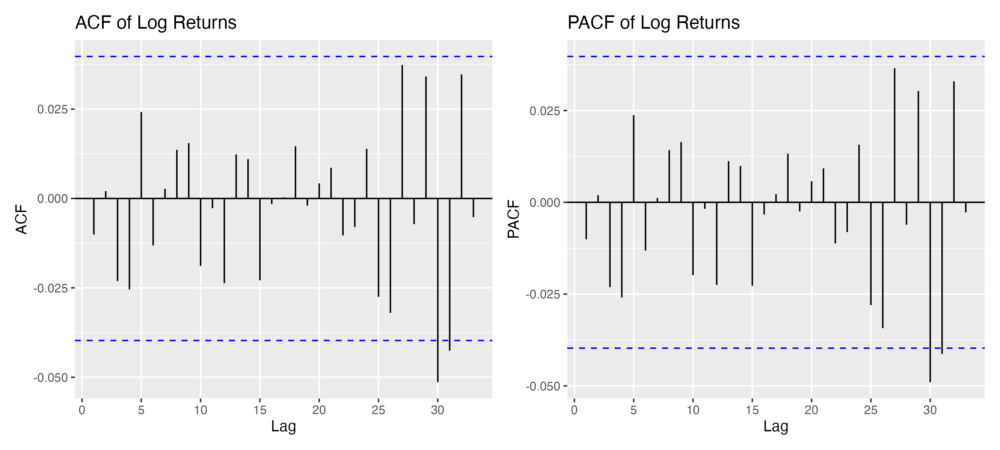

Time Series Analysis
MediaTek Stock Time Series Analysis
A financial time series project that applies log-return transformation, stationarity testing, ARIMA model selection, residual diagnostics, forecast evaluation, and a GARCH-ready workflow to MediaTek stock data.
Problem Motivation
This project examines how time series methods can be used to model and evaluate the dynamics of a real stock series. The main goal is to turn raw stock prices into a stationary return series, fit an interpretable forecasting model, and evaluate how well the model performs on a held-out test window.
Methodology
- Combined two historical price files and removed duplicate trading dates
- Constructed daily logarithmic returns from closing prices
- Applied the Augmented Dickey-Fuller test to assess stationarity
- Used
auto.arima()to select an ARIMA model on the training set - Evaluated residual diagnostics and generated 60-step forecasts
- Converted return forecasts back to price forecasts and computed RMSE and MAE
- Prepared ACF and PACF plots and left the workflow ready for later GARCH extension
Key Findings
The daily log-return series becomes more suitable for modeling after transformation, and the ARIMA framework is then used to produce 60-step forecasts on a held-out test period. The diagnostic process shows how the fitted model can be evaluated through residual behavior and forecast error measures such as RMSE and MAE. Together, these results turn the project from a descriptive stock analysis into a complete statistical forecasting workflow.
Modeling Lens
r_t = \log(P_t) - \log(P_{t-1})
ARIMA(p,d,q)
The analysis first models daily log returns, then applies ARIMA to the transformed series after stationarity checks.
Visualization
The return plot shows how daily log returns fluctuate around zero rather than following the strong trend visible in raw prices. The ACF and PACF plots are used to inspect short-run dependence in the transformed series, while the residual plot helps assess whether the fitted ARIMA model leaves meaningful structure unexplained.
Log Return Plot

ACF and PACF

Residual Plot

Sample Code
data1 <- read_csv("2454_history.csv")
data2 <- read_csv("2454_history 2.csv")
data <- bind_rows(data1, data2) %>%
mutate(Date = ymd(.data$日期)) %>%
arrange(Date) %>%
distinct(Date, .keep_all = TRUE)
price <- data$收盤
ret <- diff(log(price))
fit_arima <- auto.arima(ts(ret[1:(length(ret) - 60)], frequency = 1))
fc <- forecast(fit_arima, h = 60)
rmse <- sqrt(mean((pred_price - test_price)^2))
mae <- mean(abs(pred_price - test_price))Reflection
One limitation of a univariate ARIMA-based analysis is that it does not directly account for external market shocks or company-specific news. A natural extension would be to compare ARIMA with volatility models such as GARCH or to incorporate exogenous variables for richer forecasting.